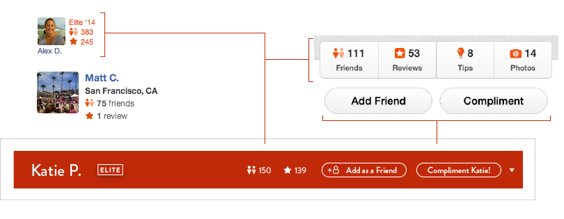
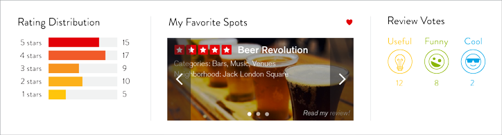

Yelp
The user profile page for Yelp users has always scared me. Inundated by massive amounts of information, I find myself having difficulty focusing on important pieces of information, with my eyes being thrown frantically across different parts of the page.
Challenge
How do we design a Yelp user's profile page in a way that has better visual heirarchy and ease of use? How do we create an interface that highlights the most important functions and information on a user's profile, that people actually want to use.
The major pain points I identified through this project are as follows:
- clutter and lack of visual heirarchy
- inconsistent design language between mobile and web platforms
- navigation bar is uninviting for use
Process
By analyzing the components of the existing site, I found that much of the information was redundant and poorly organized. I organized the site by highlighting Overall information and Reviews, which are the most important areas when viewing a user's profile. They provide the bulk of information about the user, while, Friends, Compliments and Lists, were seen to me as more of specific information serving a seconday importance, in that they provide additional and more specific information, rather than core user data.
As seen below, the lack of heirarchy and organization is apparent- similar elements are separated and have no logical flow.
 [Current user page layout]
[Current user page layout]
overall info
reviews info
friends
compliments
lists
Redesigned Layout
The redesign begins with a 2-column design, rather than the current 3-column layout, which clutters the site.
-
The top section of the site was designed to contain the most vital information when viewing a user's profile.
-
The recent activity (which has been switched from just a long list of reviews) provides a better idea of what the user has been up to.
-
The info below the user's picture (Friends, Compliments, Lists) provides a quick overview of more specific data, all of which is accessible in the navigation bar.
[Website user thumbnail]
[Mobile app user page]

At a Glance
The very first thing a viewer will notice when landing on the user detail page, is this bold red bar. Here, the most important info of the number of friends and reviews is available. This bar is a way of bridging the gap of inconsistency in the desktop and mobile app experience.The bulk of the viewable content, which previously had been a long list of reviews, has been changed to a feed of recent activity (just like the mobile app)
The fact that the Photos section is placed prominently at the top on the mobile app, while nearly impossible to find on the webpage,indicates Yelp's own uncertainty of what kind of information is most important to users. Yelp's mobile app is headed toward the right direction - Photos presents a growing opportunity for Yelp to increase user-generated content and the change of the users profile from a list of reviews to a feed of their recent activity highlights this change.
[Existing overview]
Navigation Bar Redone
Is this redundancy necessary? I think not.
Between this overview section on the left and the nav bar on the right, half of the links are repeated and accessible in both sections of the site, with the remaining links being accessible only in their respective areas. I would like to use either the section on the left, or the navigation bar on top - not both.
Say goodbye to the clutter of the user detail info. Most of the information has now been incorporated directly into the navigation bar, thereby reducing redundant information, while inviting use to a more helpful navigation bar. (On several occasions, I have clicked through the navigation bar of the previous site, frustrated to see that I was directed to a page with no content)

Showcase
This area right below the navigation bar provides a quick way to glean information about a user. In an instant, users can see the overall ratings of all the reviews a user has written, their preferences in the places they go, as well as the quality of their reviews.
During my research, I found that many users (sans the truly avid users of Yelp) did not build lists. "My Favorite Spots" is a new feature that is a default list created from the beginning of the user's experience, which not only encourages them to start building lists, but also provides viewers of a user's profile an instant feel for the tastes and preferences of a particular user.
This addition addresses a problem that goes beyond a simple redesign - a major flaw with Yelp ratings, is that a given user's reviews do not reflect that tastes of everybody. Individuals have their own unique preferences, and by allowing users to get a feel for another user's specific preferences, they can make more educated inferences about how they themselves will enjoy a place. People might also be more inclined to trust the reviews of a user who has compatible tastes.
Overall, this kind of area for showcasing a public image is what a user detail page needs- a way of making users want to express their preferences and wide experience with Yelp. In order to compliment Yelp's model of gamification, a stage is created where users can exhibit their "trophies".
[Active Button]
[Inactive Button]
[Static Icon]

Revamped Icons
These updated icons feature a "Funny" and a "Cool" icon character with more personality than before. The icon which Yelp uses to depict the "Cool" compliment (a snowflake), neither indicates the warmth in giving a compliment, nor the emotion of what is being conveyed.
Final Re-Design


{kind=link}
{kind=link}